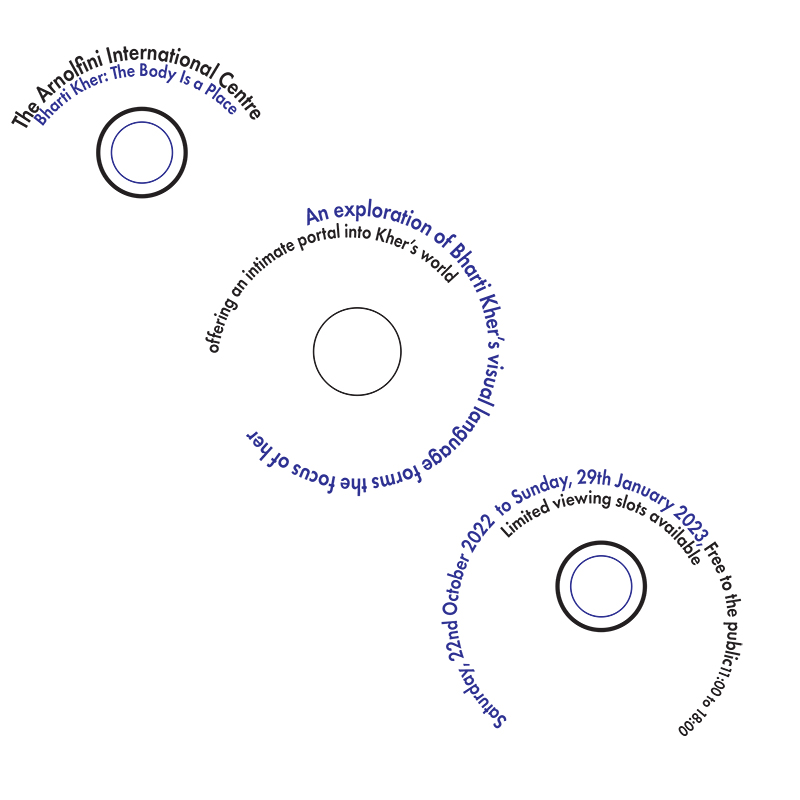
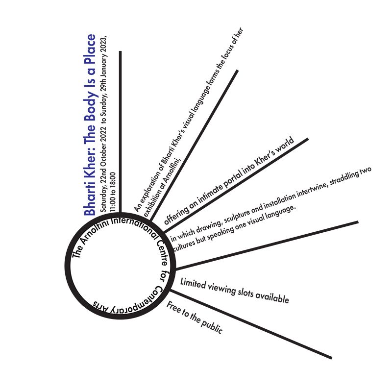

This is my first website I have created with html and the tasks required for my Graphic and Web Design Module in Digital Media
Here you can find my tasks below:
Here you can find my tasks below:
CARP Posters
Here are my posters I designed for the Bristol Balloon Fiesta:


In my first version of my poster design, I decided to predominantly use triangles to divide the poster into sections, with the logo being in the top left of the first black triangle and the festival information being mainly in the blue triangle in the middle, but in doing this I still chose to make the proximity of the elements in my design quite tight and close. I incorporated contrast with the choice of white text inside of the blue colour of the triangle, I also used contrast by choosing a black text to contrast the white text. My repetition would be another significant part of the design as I've made the text “fade away” by removing the last word of each line until the words “4 free days” remained, I chose to keep the font within the same font family. One more choice I made for this poster was to have my alignment following the angle of the triangles which made for my text being at a slant and I chose to repeat this with the logos in my design, with the only one not following this being the main festival logo.
For the second iteration of my poster, I kept triangles in the design however I used them to make my images of the hot air balloons look like arrows, I repeated this to create two “arrows” in my design, an alternate way I used repetition was through using 3 rectangles within one of these arrows, one after the other. I chose to use alignment to make my festival information text at a 270-degree angle, I deterred from my first poster by making my logos straight in line. Another design choice was that I contrasted more prominent in the design by choosing white text on my black background and using black text on the white arrow shape that I created. I borrowed the tight proximity feel from my previous poster but put a heavier emphasis on how close everything was specifically on the left side of the design.
My third type of poster was very different to my past two as in comparison to my second poster it’s a lot more simplistic with not as many elements on the page and the main visual staple being a hot air balloon that I highlighted with a centrally placed white circle and my text aligned against the curve of this circle. I repeated the selection of white text but this time I chose to display contrast against a vibrant blue background. My use of repetition can be seen through the textual information having the same text below it but with a lower opacity creating a slight fade. I decided to keep the text near one another however the logos of the festival supporters were purposefully in further proximity from each other, and the main fiesta logo followed this as well. I took inspiration from my first design by having my text at an angle again but deviated with my logos being straight on.
The Final design of my poster was majorly influenced by my third design which was one of my personal favourites, this can be seen with blue as my main colour palette with the white text for contrast and how I’ve used circular cut-outs of a hot air balloon as one of my main components for the poster layout. I also borrowed my starting poster’s use of triangles in this final version. How I’ve improved and changed from my third design is by using different shades of blue within my colour palette and using a gradient as my background, I’ve also decided to use a variety of different font family’s as in the past three designs I’ve kept them quite consistent, these being “Microsoft Jhenghei”, “Franklin Gothic Medium Cond” and “Minion Pro” being the font I’ve used consistently in my past three iterations. I chose to use repetition by including a second circular image design and much like my third design using a duplicate of the text but lowering the opacity, I also chose to repeat the line underneath the main event logo by creating one above it and another smaller one underneath the “GWR” logo. I appreciate the use of blues and white empowers the theme of hot balloons and the sky for the festival. I aimed for more evenly spaced proximity between each element in this design. My alignment was to a moderate level, I chose to keep the slanted text from before and decided to make only two of the logos tilted as well, all including the main logo of the event remain neutral.
TYPOGRAPHY
I learnt about the 8 typographic systems and made subsequently made 8 posters for an Arnolfini exhibition, which can be seen here:
Axial Design - The elements of the design are positioned either right or left on an imaginary central axis point, I added extra lines from this central point to add to my design.

Bilateral Design - The design is based on a pivot rather than on an axis, which the axial design incorporates, I decided to add lines and rectangles in my sole other colour option.
Dilatational Design - This is where the text of the design follows around the curve of a circle for my own personal design, I decided to incorporate a circle in my actual design.
Grid design- Parts of the design are divided evenly into sections, within my design I filled my sections with text and with coloured rectangles which could be an alternative for an image for example.
Modular design – Very similar principles to the grid design however the sections follow no specific rules and can be included randomly or not at all, this can be witnessed in my design as some sections are left blank.
Radial Design - This type of typography rotates around the circle of a design rather than following the curve, I decided to have lines extrude from my circle to imitate a sunray-like look.

Random Design - This doesn't follow any design principles or rules, I showed this by arranging my texts at different angles and using blue rectangles at different points across the designs.
Transitional design – Within this variation of typography the text implies a form of movement in the way it’s been aligned, within my design, I chose to mimic a water wave, and I achieved this by creating wave-like shapes to help emphasise this and circles to create bubbles.